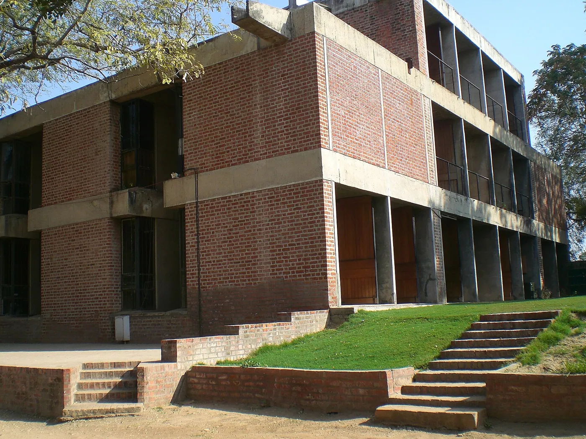
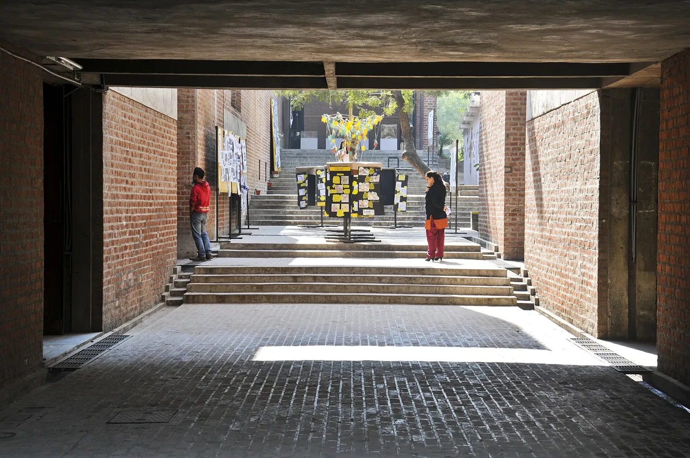
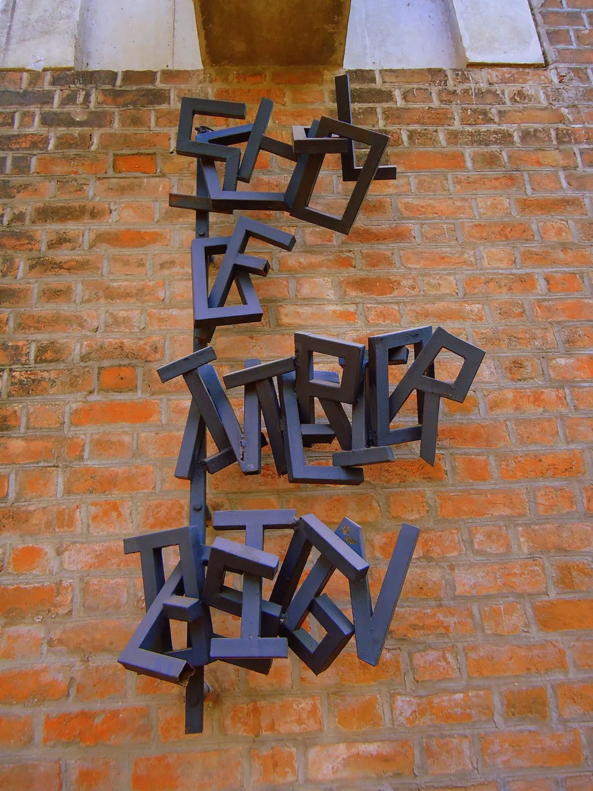

1/8 · Exterior · School of Building Science and Technology (SBST)Photo: Aurobindo Ogra · CC BY-SA 3.0 · source2/8 · Exterior · A building from cept universityPhoto: Arjuncm3 · CC BY-SA 3.0 · source

3/8 · Exterior · CEPT Building AhmedabadPhoto: Maulik Joshi · CC BY-SA 3.0 · source4/8 · Exterior · cept againPhoto: Palash Dugar · CC BY-SA 3.0 · source

5/8 · Exterior · Entrance area near sagra basement at CEPT CampusPhoto: Dhruvdhakan · CC BY-SA 3.0 · source

6/8 · Interior · The Students of CEPT are done some terrifice painting in the way of classroom Photo: Mananshah1008 · CC BY-SA 3.0 · source